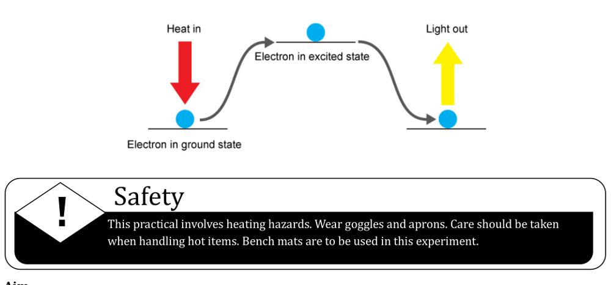
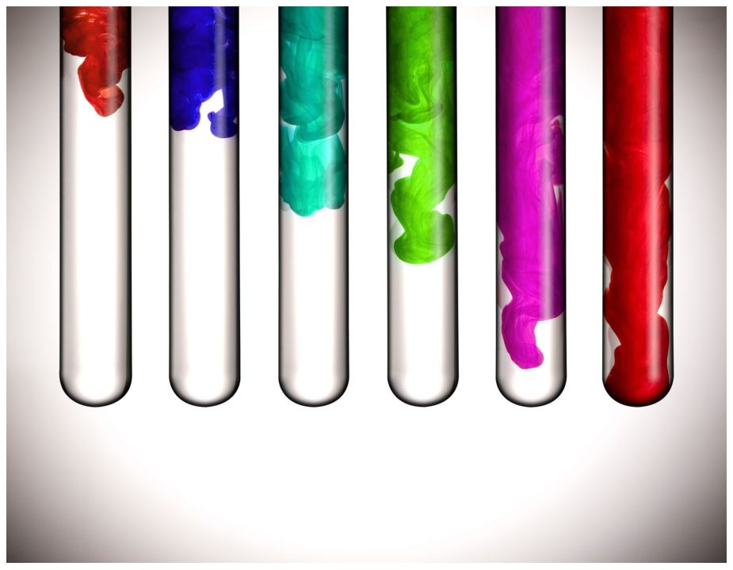
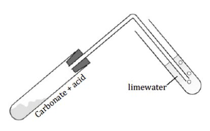

Practical 1: Flame tests
Firework colours come from metal compounds being vaporised and excited at high temperatures. When atoms or ions are heated in a flame, some electrons absorb energy and jump to higher energy levels. These excited electrons are unstable and fall back to lower levels, releasing the energy as visible light. Every element has its own arrangement of electrons, so each metal gives a characteristic flame colour (though not all metals give a distinct colour).


Procedure: set up a Bunsen burner on a heatproof mat with a beaker of water beside it. Clean a nichrome wire loop by dipping it in water and heating it until it burns cleanly. Dip it in a metal ion solution (chlorides of Li+, Na+, K+, Ca2+, Ba2+) and hold it in the flame. Record the colour. Your teacher then demonstrates unknown solutions.
Practical 2: Qualitative analysis of cations
A qualitative analysis finds what substances are present (non-numerical information); a quantitative analysis measures how much. This scheme of standard tests was developed by chemists of past generations. Flame tests can be unreliable, so precipitation reactions and the ammonium gas test are also used. A small amount of precipitate makes a mixture cloudy; more makes it milky. Add reagents slowly to see the precipitate.
Test solutions: NH4Cl, Cu(NO3)2, FeSO4, FeCl3, AgNO3, Ba(NO3)2. Reagents: KSCN, K3Fe(CN)6, Na2SO4, NaCl, 1 M NaOH; drop tiles, black and white paper, red litmus paper.
| Cation | Test | Observation |
|---|---|---|
| NH4+ (NH4Cl) | Add NaOH (warm) | No precipitate; ammonia gas (pungent smell) |
| Damp red litmus held near | Turns blue | |
| Cu2+ (Cu(NO3)2) | Add NaOH | Light blue precipitate, Cu(OH)2 |
| Ag+ (AgNO3) | Add NaOH | Brown precipitate (Ag2O) |
| Add NaCl | White precipitate, AgCl | |
| Ba2+ (Ba(NO3)2) | Add NaOH | No precipitate (or a faint white cloudiness) |
| Add Na2SO4 | White precipitate, BaSO4 | |
| Fe2+ (FeSO4) | Add NaOH | Green precipitate, Fe(OH)2 |
| Add K3Fe(CN)6 | Dark blue colour/precipitate | |
| Fe3+ (FeCl3) | Add NaOH | Rusty brown precipitate, Fe(OH)3 |
| Add KSCN | Blood-red colour |
Ammonium salts are extremely soluble, so test for NH4+ at the start of an analysis.
Adding KSCN to an unknown solution gives a blood-red colour. Which ion is present?
KSCN tests for Fe³⁺ (blood red); K₃Fe(CN)₆ tests for Fe²⁺ (dark blue).
Practical 3: Qualitative analysis of anions
Test solutions: NaCl, NaBr, KI, Na2SO4, NaNO3, solid CaCO3. Reagents: AgNO3, 1 M HNO3, 1 M HCl, BaCl2, limewater (Ca(OH)2).
Halides (Cl−, Br−, I−): halides are usually soluble but form insoluble compounds with silver. Add 1 drop of dilute HNO3, then 1 drop of AgNO3. (Fluoride is soluble and gives no precipitate.)
Carbonate (CO32−): found in limestone and baking soda. Most carbonates are insoluble except those of sodium, potassium, lithium and ammonium; carbonates are slightly basic (turn phenolphthalein pink). Add 1 mL of HCl to a spatula of solid CaCO3 and bubble the gas through limewater.

Sulfate (SO42−): acidify with a few drops of nitric acid, then add barium chloride solution.
Nitrate (NO3−): gives no precipitate with silver nitrate or barium chloride: it is identified by elimination.
| Anion | Test | Observation |
|---|---|---|
| Cl− | HNO3 then AgNO3 | White precipitate, AgCl: Ag+ + Cl− → AgCl(s) |
| Br− | HNO3 then AgNO3 | Cream (pale yellow) precipitate, AgBr: Ag+ + Br− → AgBr(s) |
| I− | HNO3 then AgNO3 | Yellow precipitate, AgI: Ag+ + I− → AgI(s) |
| CO32− | Add HCl | Fizzing (CO2 gas) |
| Bubble gas through limewater | Limewater turns milky | |
| SO42− | AgNO3 | Little or no precipitate |
| HNO3 then BaCl2 | White precipitate, BaSO4 | |
| NO3− | AgNO3 | No precipitate |
| HNO3 then BaCl2 | No precipitate |
Summary: identification flow charts
Practice questions
When HNO3 and AgNO3 were added to the unknown solution, a pale yellow precipitate formed. NaOH added to a fresh sample gave no precipitate. The solution burned with a lilac flame.
Anion: Cation: Formula:
HNO3 and AgNO3 gave no precipitate. BaCl2 added to a fresh sample gave no precipitate. Hydrochloric acid produced a gas that turned limewater cloudy. NaOH added to a fresh sample gave no precipitate, but the solution turned red litmus blue and had a distinctive odour.
Anion: Cation: Formula:
The booklet's results for this unknown are slightly contradictory: carbonate would normally give a pale precipitate with AgNO₃. The limewater test is the conclusive one.
Qualitative Analysis Practical Test
You will be given three unknown solutions to identify independently, using the diagnostic tests in this chapter and the flow charts above. Marks are deducted for inappropriate use of safety wear.
Reagents: yellow dot: 1 M HNO3, 1 M HCl, 0.1 M AgNO3, 0.1 M BaCl2; red dot: 0.1 M KSCN, 0.1 M K3Fe(CN)6, 1 M NaOH, 0.1 M Na2SO4, 0.1 M NaCl. Also drop tiles, red litmus paper, nichrome wire loops, Bunsen burner, matches, heatproof mat, 100 mL beaker and tweezers.